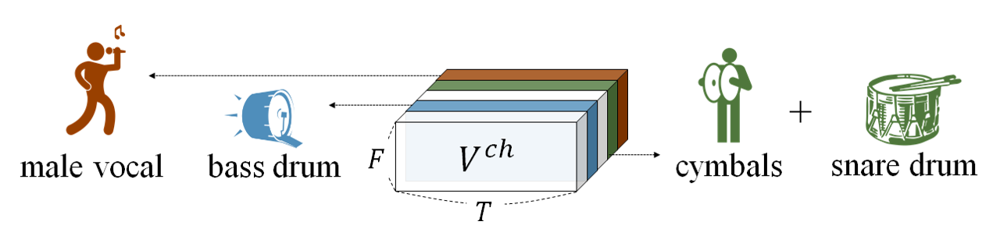

AMSS-Net
How AMSS-Net works: Latent Source Channels
We generate an audio track from a single latent source to check how AMSS-Net works in this demo.
1. Latent Source
- In AMSS-Net, a latent source channel deals with a more detailed acoustic feature than a symbolic-level source
- We are used to categorizing symbolic-level classes of sources such as ‘vocals,’ ‘drums’ or ‘bass.’
- However, in fact, there are much more ‘instruments’ or sources we have to consider for AMSS
- For example,
- lower frequency band of female-classic-soprano, male-jazz-baritone … $\in$ ‘vocals’
- kick, snare, rimshot, hat(closed), tom-tom … $\in$ ‘drums’
- contrabass, electronic, walking bass piano (boogie-woogie) … $\in$ ‘bass.’
- Such latent source-level analysis enables AMSS-Net to perform delicate manipulation for the given AMSS task
- We designed AMSS-Net to perform latent source-level analysis for the given audio.
- Similar to [1], we assume that a weighted sum of latent sources can represent a source
- while [2] assumed that latent sources are independent.
2. Latent Source Channel Extraction
- Each decoding block of AMSS-Net
- first extracts a feature map $V^{ch}$, in which each channel corresponds to a specific latent source ($\leftarrow$ by Latent Source Channel Extractor),
- and selectively manipulates those channels for AMSS
- After training, the feature map $V^{ch}$ is expected that
- each channel of $V^{ch}$ deals with a specific latent source
- The conceptual view of the Latent Source Channel is shown in the figure below
- For example, the second channel deals with the acoustic features observed in the singing voice.

3. Visualization of Latent Source Channels
- To verify that each decoding block in AMSS-Net extracts a feature map, in which each channel corresponds to a specific latent source,
- we generate an audio track from a single latent source channel,
- During the last decoding block, we mask all channels in the manipulated feature map $V’^{ch}$ except for a single latent source channel
- and fed it to the remaining sub-networks to generate the audio track.
- we generate an audio track from a single latent source channel,
-
Below is the python API that extracts audio from a latent source channel=4 at head=1
manipulate_lach(model, head=1, lach=4, amss)
4. Results
Below are generated audios of a single latent source channel. For example, if we generate output after masking all channels except for the fifth channel in the second head group, then the result sounds similar to the low-frequency band of drums (i.e., kick drum).
AMSS-Net can keep this channel and drop other drum-related channels to process “apply lowpass to drums.”
However, we found that a latent source channel does not always contain a single class of instruments. For example, the latent channel of the fourth row in the table deals with several instruments. Some latent sources were not interpretable to the authors.
| Latent Source Channel | similar symbol | Audio | Spectrogram |
|---|---|---|---|
| N/A | origin |  |
|
| head=1, lach=4 | drums low frequency band |  |
|
| head=4, lach=0 | drums high frequency band |  |
|
| head=5, lach=0 | vocals, bass, and high-hat |  |
|
| head=3, lach=5 | vocals |  |
Reference
[1] Woosung Choi, Minseok Kim, Jaehwa Chung, and Soonyoung Jung. 2020. LaSAFT:Latent Source Attentive Frequency Transformation for Conditioned Source Sepa-ration.arXiv preprint arXiv:2010.11631(2020).
[2] Scott Wisdom, Efthymios Tzinis, Hakan Erdogan, Ron J. Weiss, Kevin Wilson, andJohn R. Hershey. 2020. Unsupervised Sound Separation Using Mixture InvariantTraining. In NeurIPS. https://arxiv.org/pdf/2006.12